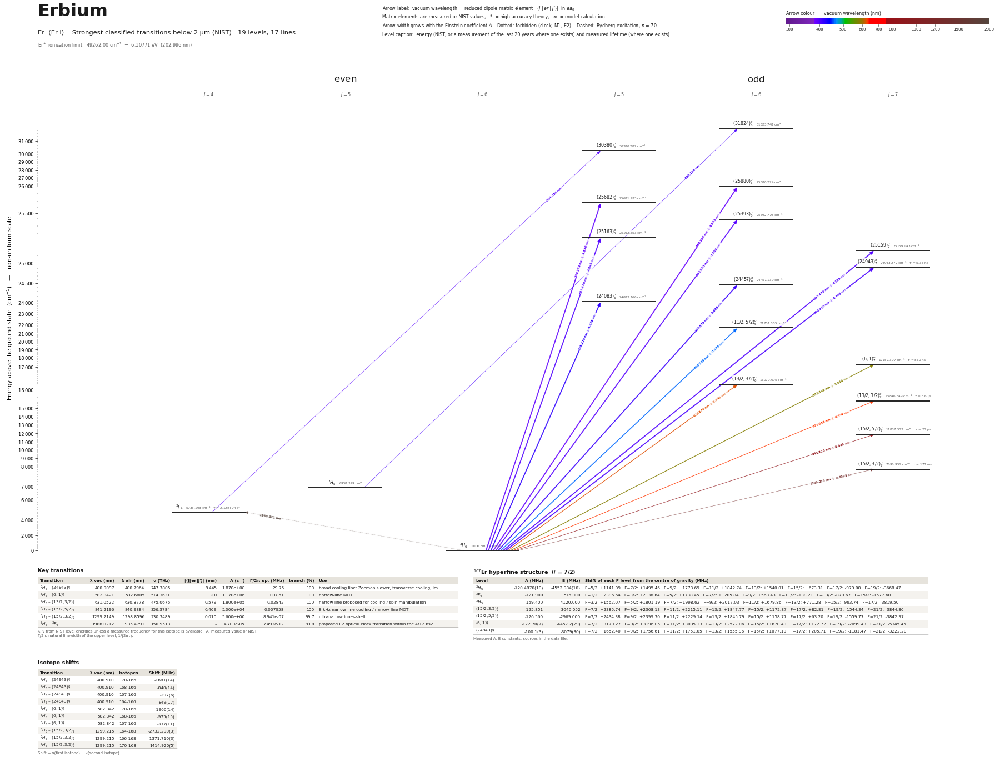

Erbium energy level diagram
Energy levels and transitions of neutral erbium (Er I): the 17 strongest classified lines below 2 µm from the NIST Atomic Spectra Database and the 19 levels they connect, each line with its vacuum wavelength, frequency and, for 14 of them, the reduced dipole matrix element derived from the NIST transition rate. Measured lifetimes, transition rates, hyperfine constants and isotope shifts from the literature are included, each with its citation.
Hover a line or a level to isolate it, click to keep it selected. Scroll to zoom, drag to move.

Download: diagram (PDF) diagram (SVG) transitions (CSV) levels (CSV) source code

Key transitions of erbium
| Transition | λ vac (nm) | λ air (nm) | ν (THz) | |⟨J‖er‖J′⟩| (ea₀) | A (s⁻¹) | Γ/2π up. (MHz) | branch (%) | Use |
|---|---|---|---|---|---|---|---|---|
| 3H6 – (24943)°7 | 400.9097 | 400.7964 | 747.7805 | 9.445 | 1.870e+08 | 29.75 | 100 | broad cooling line: Zeeman slower, transverse cooling, im… |
| 3H6 – (6,1)°7 | 582.8421 | 582.6805 | 514.3631 | 1.310 | 1.170e+06 | 0.1851 | 100 | narrow-line MOT |
| 3H6 – (13/2,3/2)°7 | 631.0522 | 630.8778 | 475.0676 | 0.579 | 1.800e+05 | 0.02842 | 100 | narrow line proposed for cooling / spin manipulation |
| 3H6 – (15/2,5/2)°7 | 841.2196 | 840.9884 | 356.3784 | 0.469 | 5.000e+04 | 0.007958 | 100 | 8 kHz narrow-line cooling / narrow-line MOT |
| 3H6 – (15/2,3/2)°7 | 1299.2149 | 1298.8596 | 230.7489 | 0.010 | 5.600e+00 | 8.941e-07 | 99.7 | ultranarrow inner-shell |
| 3H6 – 3F4 | 1986.0212 | 1985.4791 | 150.9513 | – | 4.700e-05 | 7.493e-12 | 99.8 | proposed E2 optical clock transition within the 4f12 6s2… |
λ, ν from NIST level energies unless a measured frequency for this isotope is available. A: measured value or NIST. Γ/2π: natural linewidth of the upper level, 1/(2πτ).
167Er hyperfine structure (I = 7/2)
| Level | A (MHz) | B (MHz) | Shift of each F level from the centre of gravity (MHz) |
|---|---|---|---|
| 3H6 | -120.4870(10) | -4552.984(10) | F=5/2: +1141.09 F=7/2: +1495.46 F=9/2: +1773.69 F=11/2: +1842.74 F=13/2: +1540.01 F=15/2: +673.31 F=17/2: -979.08 F=19/2: -3668.47 |
| 3F4 | -121.900 | 516.000 | F=1/2: +2386.64 F=3/2: +2138.64 F=5/2: +1738.45 F=7/2: +1205.84 F=9/2: +568.43 F=11/2: -138.21 F=13/2: -870.67 F=15/2: -1577.60 |
| 3H5 | -159.400 | -4120.000 | F=3/2: +1562.07 F=5/2: +1801.19 F=7/2: +1998.62 F=9/2: +2017.03 F=11/2: +1679.86 F=13/2: +771.28 F=15/2: -963.74 F=17/2: -3819.50 |
| (15/2,3/2)°7 | -125.851 | -3046.052 | F=7/2: +2385.74 F=9/2: +2368.13 F=11/2: +2215.11 F=13/2: +1847.77 F=15/2: +1172.87 F=17/2: +82.81 F=19/2: -1544.34 F=21/2: -3844.86 |
| (15/2,5/2)°7 | -126.560 | -2969.000 | F=7/2: +2434.38 F=9/2: +2399.70 F=11/2: +2229.14 F=13/2: +1845.79 F=15/2: +1158.77 F=17/2: +63.20 F=19/2: -1559.77 F=21/2: -3842.97 |
| (6,1)°7 | -172.70(7) | -4457.2(29) | F=7/2: +3170.27 F=9/2: +3196.05 F=11/2: +3035.13 F=13/2: +2572.06 F=15/2: +1670.40 F=17/2: +172.72 F=19/2: -2099.43 F=21/2: -5345.45 |
| (24943)°7 | -100.1(3) | -3079(30) | F=7/2: +1652.40 F=9/2: +1756.61 F=11/2: +1751.05 F=13/2: +1555.96 F=15/2: +1077.10 F=17/2: +205.71 F=19/2: -1181.47 F=21/2: -3222.20 |
Measured A, B constants; sources in the data file.
Isotope shifts
| Transition | λ vac (nm) | Isotopes | Shift (MHz) |
|---|---|---|---|
| 3H6 – (24943)°7 | 400.910 | 170-166 | -1681(14) |
| 3H6 – (24943)°7 | 400.910 | 168-166 | -840(14) |
| 3H6 – (24943)°7 | 400.910 | 167-166 | -297(6) |
| 3H6 – (24943)°7 | 400.910 | 164-166 | 849(17) |
| 3H6 – (6,1)°7 | 582.842 | 170-166 | -1966(14) |
| 3H6 – (6,1)°7 | 582.842 | 168-166 | -975(15) |
| 3H6 – (6,1)°7 | 582.842 | 167-166 | -337(11) |
| 3H6 – (15/2,3/2)°7 | 1299.215 | 164-168 | -2732.290(3) |
| 3H6 – (15/2,3/2)°7 | 1299.215 | 166-168 | -1371.710(3) |
| 3H6 – (15/2,3/2)°7 | 1299.215 | 170-168 | 1414.920(5) |
Shift = ν(first isotope) − ν(second isotope).
Listed Er transitions below 2 µm
| Lower level | Upper level | λ vacuum (nm) | λ air (nm) | ν (THz) | Type | |⟨J‖er‖J′⟩| (ea₀) | A (s⁻¹) | Branching (%) | Source of matrix element / A |
|---|---|---|---|---|---|---|---|---|---|
| 3H6 | (25880)°6 | 386.3947 | 386.2851 | 775.8711 | E1 | 6.553 NIST | 1.160e+08 NIST | – | NIST ASD (accuracy n/a) |
| 3H6 | (25682)°5 | 389.3788 | 389.2685 | 769.9250 | E1 | 4.830 NIST | 7.280e+07 NIST | – | NIST ASD (accuracy n/a) |
| 3H6 | (25393)°6 | 393.8127 | 393.7013 | 761.2564 | E1 | 3.383 NIST | 2.920e+07 NIST | – | NIST ASD (accuracy n/a) |
| 3F4 | (30380)°5 | 394.5538 | 394.4421 | 759.8266 | E1 | – | – | – | – |
| 3H6 | (25163)°5 | 397.4160 | 397.3036 | 754.3544 | E1 | 4.040 NIST | 4.790e+07 NIST | – | NIST ASD (accuracy n/a) |
| 3H6 | (25159)°7 | 397.4698 | 397.3574 | 754.2521 | E1 | 4.125 NIST | 3.660e+07 NIST | – | NIST ASD (accuracy n/a) |
| 3H6 | (24943)°7 | 400.9097 | 400.7964 | 747.7805 | E1 | 9.445 measured | 1.870e+08 measured | 100 | A. Frisch, PhD thesis 'Dipolar quantum gases of erbium', Univ. Innsbruck (2014), Table 2.4 |
| 3H5 | (31824)°6 | 402.1650 | 402.0513 | 745.4465 | E1 | – | – | – | – |
| 3H6 | (24457)°6 | 408.8786 | 408.7632 | 733.2066 | E1 | 3.645 NIST | 3.030e+07 NIST | – | NIST ASD (accuracy n/a) |
| 3H6 | (24083)°5 | 415.2278 | 415.1107 | 721.9951 | E1 | 6.108 NIST | 9.600e+07 NIST | – | NIST ASD (accuracy n/a) |
| 3H6 | (11/2,5/2)°6 | 460.7895 | 460.6604 | 650.6061 | E1 | 2.176 NIST | 7.540e+06 NIST | – | NIST ASD (accuracy n/a) |
| 3H6 | (6,1)°7 | 582.8421 | 582.6805 | 514.3631 | E1 | 1.310 measured | 1.170e+06 measured | 100 | Den Hartog et al. 2010 / Lawler et al. 2010, as quoted in A. Frisch, PhD thesis 'Dipolar … |
| 3H6 | (13/2,3/2)°6 | 622.2739 | 622.1017 | 481.7693 | E1 | 1.140 NIST | 8.400e+05 NIST | – | NIST ASD (accuracy n/a) |
| 3H6 | (13/2,3/2)°7 | 631.0522 | 630.8778 | 475.0676 | E1 | 0.579 measured | 1.800e+05 measured | 100 | Ban, Jacka, Hanssen, Reader, McClelland, Opt. Express 13, 3185 (2005) |
| 3H6 | (15/2,5/2)°7 | 841.2196 | 840.9884 | 356.3784 | E1 | 0.469 measured | 5.000e+04 measured | 100 | Ban, Jacka, Hanssen, Reader, McClelland, Opt. Express 13, 3185 (2005) |
| 3H6 | (15/2,3/2)°7 | 1299.2149 | 1298.8596 | 230.7489 | E1 | 0.00954 measured | 5.600e+00 measured | 99.7 | A. Patscheider, PhD thesis 'Controlling and Understanding of Dipolar Quantum Gases of Erb… |
| 3H6 | 3F4 | 1986.0212 | 1985.4791 | 150.9513 | clock | – | 4.700e-05 theory | 99.8 | Kozlov, Dzuba, Flambaum, "On the prospects of building optical atomic clocks using Er I o… |
Reduced dipole matrix elements follow the convention A = ω³|d|²/(3πε₀ħc³(2J′+1)), with J′ the upper level. Tags show where a number comes from: measured, NIST compilation, high-accuracy theory, or a model calculation.
Er energy levels
Er⁺ ionisation limit 49262.00 cm⁻¹ = 6.10771 eV (202.996 nm)
Sources
- A. Frisch, PhD thesis 'Dipolar quantum gases of erbium', Univ. Innsbruck (2014), Table 2.4
- A. Frisch, PhD thesis 'Dipolar quantum gases of erbium', Univ. Innsbruck (2014), Table 2.…
- A. Patscheider, PhD thesis 'Controlling and Understanding of Dipolar Quantum Gases of Erb…
- Ban, Jacka, Hanssen, Reader, McClelland, Opt. Express 13, 3185 (2005)
- Childs, Goodman, Cheng, Phys. Rev. A 33, 1469 (1986), as tabulated in Dzuba, Flambaum, ar…
- Childs, Goodman, Pfeufer, Phys. Rev. A 28, 3402 (1983), as quoted in Frisch, Aikawa, Mark…
- Childs, Goodman, Pfeufer, Phys. Rev. A 28, 3402 (1983), as tabulated in Dzuba, Flambaum, …
- Den Hartog et al. 2010 / Lawler et al. 2010, as quoted in A. Frisch, PhD thesis 'Dipolar …
- Den Hartog, Chisholm, Lawler, J. Phys. B 43, 155004 (2010), as quoted in A. Patscheider, …
- Frisch, Aikawa, Mark, Ferlaino, Berseneva, Kotochigova, Phys. Rev. A 88, 032508 (2013)
- Jin, Horiguchi, Wakasugi, Yoshizawa, J. Phys. Soc. Jpn. 59, 3148 (1990), as quoted in Fri…
- Kozlov, Dzuba, Flambaum, "On the prospects of building optical atomic clocks using Er I o…
- Kozlov, Dzuba, Flambaum, "On the prospects of building optical atomic clocks using Er I o…
- Lipert, Lee, Appl. Phys. B 57, 373 (1993), as tabulated in Dzuba, Flambaum, arXiv:2305.05…
- NIST ASD
- NIST ASD level energies
- Patscheider, Yang, Natale, Petter, Chomaz, Mark, Hovhannesyan, Lepers, Ferlaino, Phys. Re…
Isotope shifts are nu(first)-nu(second), keys as printed in the sources (reference isotope 166 for 401/583 nm, 168 for 1299 nm). Hyperfine A, B convention: E = A K/2 + B [3K(K+1)/4 - I(I+1)J(J+1)] / [2I(2I-1)J(2J-1)], K = F(F+1)-I(I+1)-J(J+1); 167Er (I=7/2) has negative A (inverted structure). Extra fields beyond SCHEMA.md: top-level ionization_limit; level fields lifetime_other, hyperfine_other, level_energy_measured; transition fields linewidth_MHz / linewidth_kHz / linewidth_Hz, wavenumber_cm, leak_to_metastable, isotope_shift_other, g_factor_difference, alternatives (each alternative names its quantity). rme_J_ea0 values are all derived from the A coefficient in the same entry (schema convention, J' = upper level) and inherit its method. A_s for the narrow lines is 1/tau of the upper level (no E1 leak channel exists below them, Ban et al. 2005). g_J without a literature source is copied from the NIST levels file. The 401 nm lifetime entry is the linewidth-derived value; the direct lifetime measurement (Den Hartog 2010) could only be read second-hand. Second pass: added the proposed 3H6 - 3F4 E2 clock transition (theory only) and use annotations from arXiv:2406.16146 and arXiv:2405.01499; no new measured numbers could be sourced.
Atoms with measured data
- Lithium-632 levels, 85 lines
- Lithium-732 levels, 85 lines
- Beryllium-917 levels, 26 lines
- Sodium-2336 levels, 106 lines
- Magnesium-2418 levels, 61 lines
- Magnesium-2518 levels, 61 lines
- Potassium-3934 levels, 84 lines
- Potassium-4034 levels, 84 lines
- Potassium-4134 levels, 84 lines
- Calcium-4035 levels, 61 lines
- Calcium-4335 levels, 61 lines
- Rubidium-8536 levels, 94 lines
- Rubidium-8736 levels, 94 lines
- Strontium-8740 levels, 70 lines
- Strontium-8840 levels, 70 lines
- Caesium-13331 levels, 79 lines
- Barium-13744 levels, 89 lines
- Barium-13844 levels, 89 lines
- Dysprosium-16339 levels, 55 lines
- Dysprosium-16439 levels, 55 lines
- Ytterbium-17118 levels, 26 lines
- Ytterbium-17418 levels, 26 lines